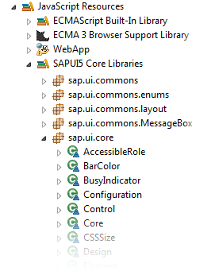

JavaScript Code Completion
Prerequisites
- You have installed the SAPUI5 Application Development feature in your Eclipse installation.
- If your Eclipse installation contains the feature org.eclipse.wst.jsdt.feature in Version 1.3.1 it is recommended to update it. In this version invoking the JavaScript code completion might cause Eclipse to crash.
Automatic Code Completion for SAPUI5 Application Projects
The Eclipse JavaScript Development Tools (JSDT) are providing an editor which parses scripts and offers such a functionality for code completion.
If a SAPUI5 Application has been created with the SAPUI5 Application Development Tools the core libraries are made available for the code completion automatically.

Enabling Code Completion for other Projects
If you are not working with a SAPUI5 Application Project, you can do the following preparing steps to add the required SAPUI5 core libraries to the JavaScript include path.
Ensure that the JavaScript Facet is set:
- Open Project → Properties
- Go to Project Facets
- If you do not see the list of all possible facets, click the link: "Convert to facet form" and wait a second to see all available facets.
- Mark JavaScript Facet on the same view
- Leave the project properties
Your project now has the JavaScript facet. Now you can add the UI5 core libraries:
- Open Project → Properties
- Go to JavaScript → Include Path
- Use Add JavaScript Library…
- Select SAPUI5
After having applied this configuration to your project, you should see the following JavaScript resources in your project now:
